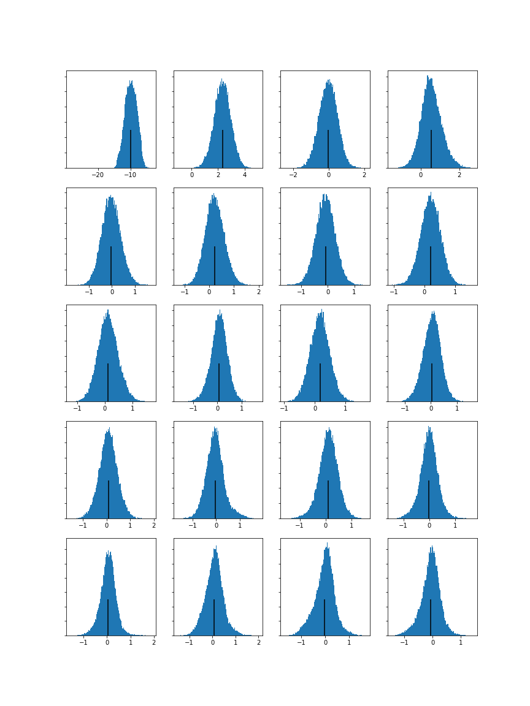
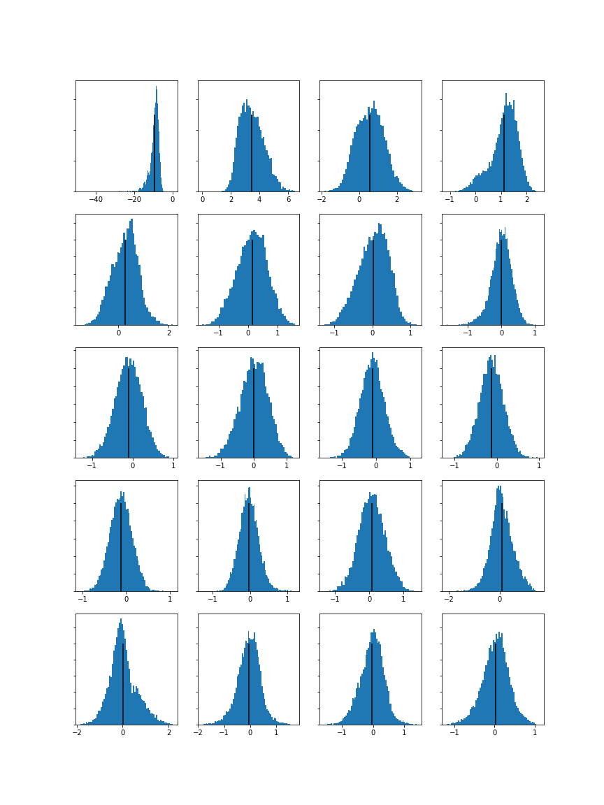
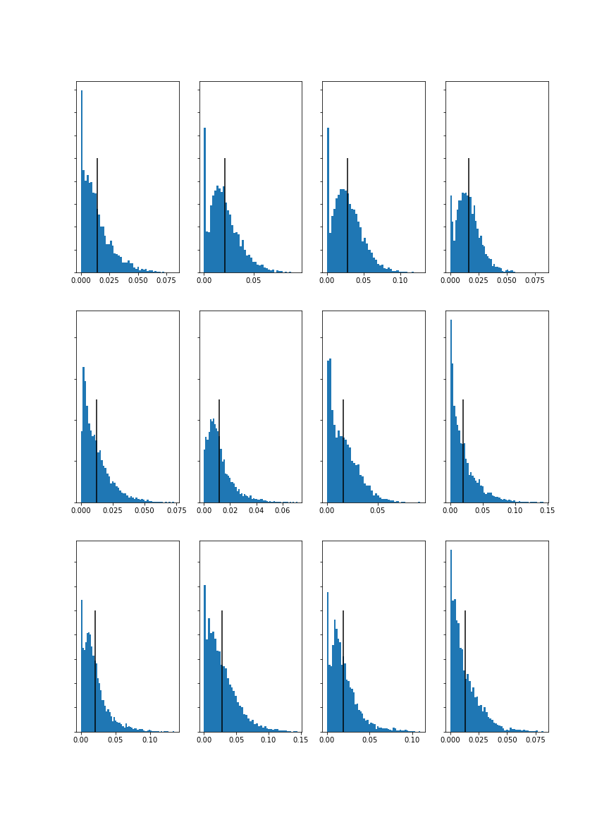

MCA-2020
| Week 1 | Week 2 | Week 3 | Week 4 | Week 5 | Week 7 | Week 8 | Week 9 | Week 10 |
Analysing & Extracting Meaning from Audio
Task 1 - Extract Features
On SonicVisualizer, I extracted the spectograms, Mel Frequency Cepstral Coefficients and Chromgrams of my three music tracks.
Below are images of the panes. Also, please click on the audio files to hear a sample of them!
Track 1: Awen by The Mind Orchestra
Track 2: Harati Harati by Navatman Music Collective
Track 3: Rain Forest Dreams by Lobo Loco


Task 2 - Compute & Visualise Histograms of each Features
Spectogram Histograms
Spectograms are used to demonstrate...
Track 1: Awen by The Mind Orchestra
Track 2: Harati Harati by Navatman Music Collective
Track 3: Rain Forest Dreams by Lobo Loco
Mel Frequency Cepstral Coefficients (MFCC) Spectograms
MFCCs show...
Track 1: Awen by The Mind Orchestra
Track 2: Harati Harati by Navatman Music Collective
Track 3: Rain Forest Dreams by Lobo Loco


Chromgram Spectograms
Chromgrams...
Track 1: Awen by The Mind Orchestra
Track 2: Harati Harati by Navatman Music Collective
Track 3: Rain Forest Dreams by Lobo Loco
